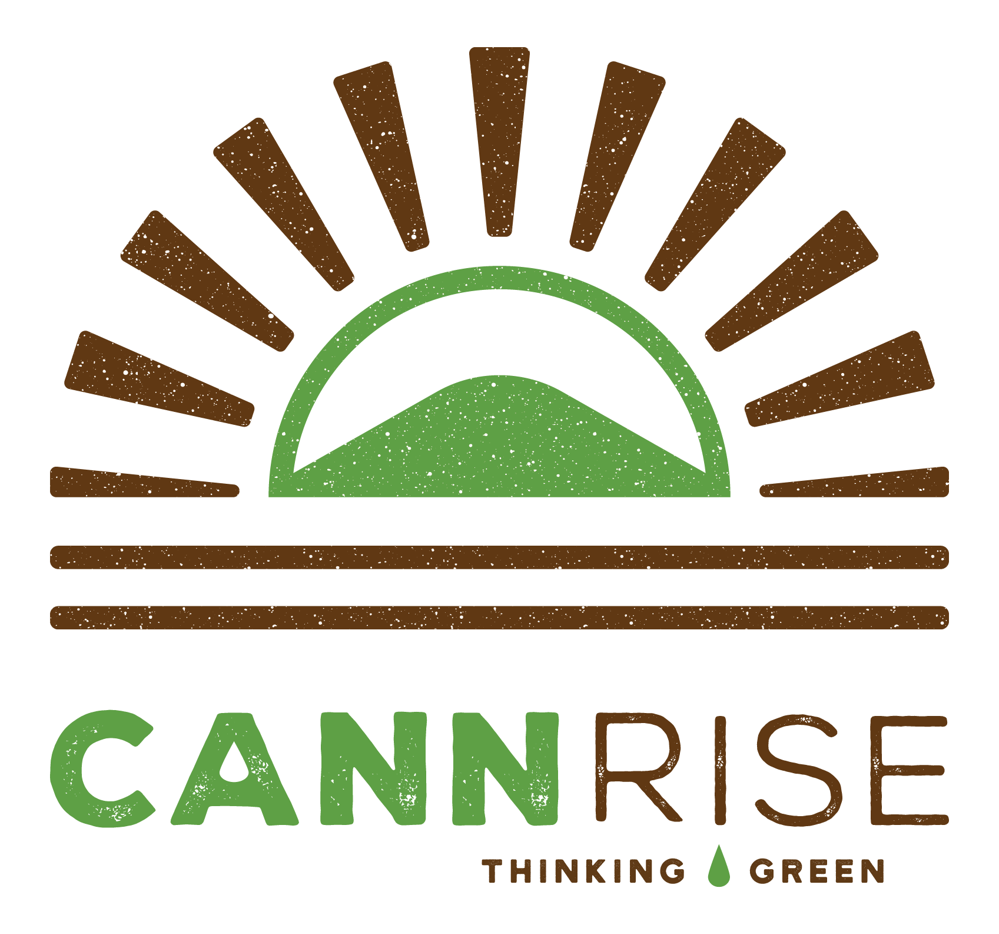

תכנון מלא שאפשר לבנות ב-Store Builder של אמזון: כל אזור בנוי מצורות שאמזון מאפשרת, כל טקסט נבדק מול ספר המותג ומול כללי התוכן של Stores, וכל תמונה היא צילום אמיתי של המותג. למטה יש סימולטור חי של החנות. כפתור "מפרט בנייה" מציג על כל אזור את הקוד, סוג האריח, המידות ומקור התמונה.
cannrise-identity-and-voice.html
cannrise-brand-book.html
cannrise-design-system.html
כמה השק מתנפח? בספר המותג כתוב 4x ובסטוריבורד 10x. בינתיים החנות לא נוקבת במספר.
בכמה הרייזר מגביה? בספר המותג כתוב "raise pots 3 cm", ובמפרט הארוך 2.4 in (כ-6 ס"מ). בינתיים מוצגות רק מידות הלוח, בלי טענת הגבהה.
איזה אורך קשר מתאים לאיזה גזע? טקסטי ההתאמה במדריך המידות (גפנים / עגבניות / גבעולים דקים) הם הצעה שלי. צריך אישור מעידו לפני ההדפסה.
הסכמת צילום: בצילומי הלייפסטייל יש ילדות, ובצילומי השדה מופיע מגדל. צריך אישור בכתב לשימוש באמזון, ולברר אם זה עידו ואם מותר לנקוב בשמו.
וידאו אמיתי: קשירה בטלפון (5–8 שניות) לטאב הקשרים, ושק מתנפח במים לטאב הקוקוס. הוידאו שכבר הפקנו נוצר ב-AI, וספר המותג אוסר להציג תוצאה שנוצרה ב-AI כאילו היא אמיתית.
הפרסונה המובילה (אישה 50–70) לא מופיעה באף צילום. מומלץ לעשות צילום קצר בגינה אמיתית ולהחליף בו את ה-Hero של Home כשהוא מוכן. גם צילומי השקים עם פלפלים/בזיליקום/פרחים קיימים רק ברוחב 464px, וצריך את המקור.
הווריאציה Standard White היא בפועל בצבע חול. בכותרת של B0FNX3TY9X (לבן, 10) מופיעות המידות של הרייזר הארוך 19.7x7.5x2.4, והמחיר שלו $70.00 מול $49.99 בשחור. אף כותרת לא פותחת ב-"Cannrise". בכותרת הקוקוס כתוב "No Soaking", בזמן שספר המותג אומר "soak it all the way".
ספר המותג מתיר את המילה reusable, אבל רשימת הטענות האסורות של המותג אוסרת "REUSABLE" על הקשרים. בחנות השתמשתי ב-Weatherproof וב-"stretches as the stem grows".